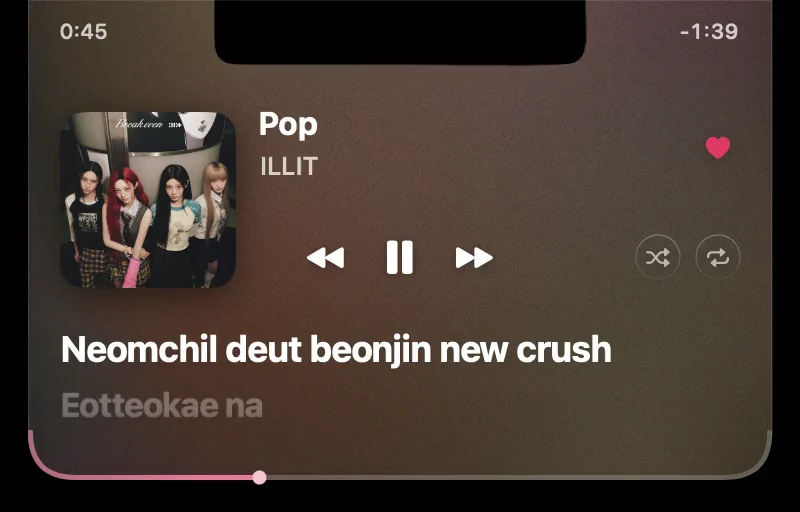

Control Spotify or Apple Music from the notch
Updated 31 October 2026
Magnetite puts the controls for the Spotify or Apple Music desktop app in the MacBook notch. Hover the notch to open them: play and pause, previous and next, seeking, and favorites or likes. It is free and open source, and it needs macOS 26 on Apple silicon. Download Magnetite v0.1.21, a 747 KB ZIP.

What works from the notch
- Play and pause, previous and next.
- Seek by dragging the bottom edge of the player.
- Skip or pause with a two-finger swipe.
- Apple Music: favorites.
- Spotify: likes, shuffle and repeat.
Spotify likes, shuffle and repeat
You don’t need to connect a Spotify account to control playback. Likes, shuffle and repeat need a free Spotify developer app of your own. The README has the steps.
What it doesn’t control
Browser tabs, YouTube and Podcasts. Magnetite works only with the Spotify and Apple Music desktop apps.
Permissions
Magnetite uses local macOS Apple Events to read what is playing and send playback commands to the app. macOS asks for Automation permission for this. A Spotify connection is optional, and Spotify’s own terms and privacy policy govern what Spotify receives.